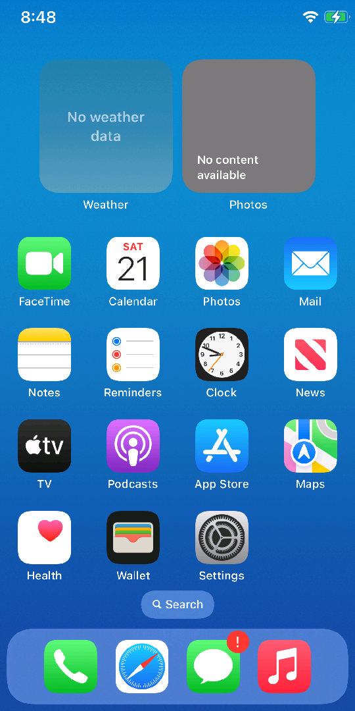

iOS 16 on the Pixel 3
Apple's open-source XNU kernel, ported to the Google Pixel 3 (blueline, Snapdragon 845), running the iOS 16.7 userland of the iPhone X. The Adreno 630 draws the UI; touch, Wi-Fi and Safari work.

Drag to rotate. Screens are real captures from the phone.
What works
As of November 2026. Details in the engineering log.
Boot
Google's bootloader (unlocked) starts a shim that loads XNU with an Apple device tree. Android stays in slot B.
Display
1080x2160 panel. iOS sees an iPhone X width at 2:1 (1125x2250, scaled 0.96). Triple-buffered scan-out at 60 Hz.
GPU
Adreno 630 under Mesa freedreno (GLES 3.2). CoreAnimation draws through an EAGL shim, straight into the display's buffers. Vulkan 1.3 through Turnip runs on the phone, and MTLCreateSystemDefaultDevice returns the A630 to processes that opt in.
Touch and buttons
ST FTM5 touch with edge gestures; power and volume keys.
Wi-Fi
WCN3990, WPA2, DHCP, joins at boot; Apple's wifid and configd. 5 GHz not yet.
CPU and storage
All 8 cores with frequency and thermal limits. UFS; the iOS root is an HFS+ image on userdata.
Battery and haptics
Fuel gauge, RTC, brightness, haptics. GPU and CPU clocks follow the load; the screen locks itself. ~200 mA with the screen off; the whole CPU cluster powers down when idle, system sleep is next.
Audio
iOS plays through the speaker: startup sound and ringtones. No microphone or headset yet.
Camera
Front IMX355 and rear IMX363 each take a picture in the kernel: 4-lane CSI-2 into the IFE-lite, saved as a colour snap. No rear focus. The kernel streams the rear sensor to userland at 30 fps (/dev/blueline-camera). In iOS, an AVFoundation app gets 30 fps 1080p frames from our capture plug-in (synthetic picture so far); sensor frames in apps are next.
Bluetooth
Not started.
Cellular, sensors
The modem boots; no data. CommCenter runs in its no-baseband (Wi-Fi iPad) mode.
Face ID / SEP
So no FairPlay: App Store apps don't run.
Roadmap
In order. Battery first: a flashed standalone boot and a soak test.
- Metal: a Metal frontend over Mesa's Turnip Vulkan driver, Apple's shader IR translated to SPIR-V. MTLCreateSystemDefaultDevice already returns the A630, and CoreAnimation's Metal compositor renders through it, and backboardd draws the lock screen with it correctly. A kernel fix cut a frame from 60-110 ms to 4-6 ms, and IOSurface targets now render in place. With backboardd on Metal the home screen now pages with as many frames as GL. Metal is now on by default for apps: Maps opens on it. A Metal test app draws at about 57 fps, a SpriteKit scene at 51 fps, and WebGL in a web view at 57 fps. To get there, the display timer follows the panel's refresh, the GPU clocks up while frames are drawn, and the kernel now tells CoreAnimation when each frame reached the screen, so its frame clock stays in step with the panel (a Metal app went from 36 to about 57 fps). A full-screen Metal app is now shown as its own hardware layer under the status bar, with no compositing or copy, and the kernel checks each frame was not drawn into while on screen. A SpriteKit scene and WebGL in a web view now hold a steady 60 fps.
- Installing apps: self-signed apps now install through installd and launch (a test app, 24 Nov). Next: reinstalls, IPA files, a better Secure Enclave stand-in. (FairPlay App Store apps stay out of reach.)
- Wi-Fi 5 GHz and reliable joins, Photos, widgets.
- Microphone and sensors.
- Cellular data.
- Bluetooth.
How it works
A ported kernel under Apple's own userland.
- 1ABLGoogle's bootloader, unlocked, boots it like a Linux kernel.
- 2ShimBuilds an Apple device tree and boot-args, then jumps to XNU.
- 3XNU (xnu-8796)ios-sweet's patches plus Pixel 3 drivers: display, GPU, touch, Wi-Fi, USB, PMIC, audio.
- 4iOS 16.7 userlandThe iPhone X's, built on your Mac from your own IPSW.
No Apple software is in the repository. The iOS root is built from Apple's IPSW on your Mac.
Test kernels boot from RAM with fastboot boot; nothing is flashed to try a change.
With sweetusb=2 the phone is a USB network adapter: live kernel log, file transfer and a shell.
Before you try it
Experimental bring-up, not a usable phone OS. Installing it erases Android's user data. Apple's security model is mostly switched off, so don't put anything personal on it. Not affiliated with or endorsed by Apple or Google.
Credits
Started as a fork of erikkunz/pixel3-ios by Erik Kunz, who did the original port. Built on ios-sweet and HakiOS (EAGL shim, MIT), ios-topaz and HackiOS (Wi-Fi station, APSL 2.0), and ios-flame (USB live log, MIT).